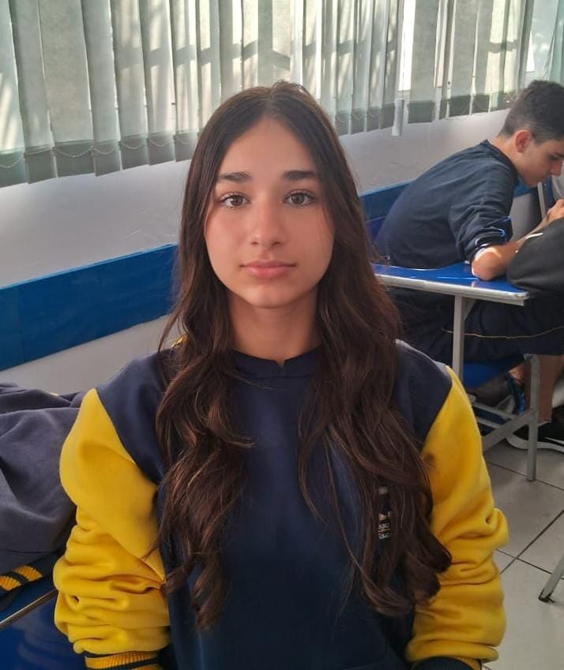

<html lang="pt-BR"></html>
<head>
    <title>Perfil do Estudante</title>
    <link rel="stylesheet" href="style.css">
</head>
<body>
        
    <div class="Perfil">
    <h1>Perfil do Estudante</h1>
         
        <h2>Informações Pessoais</h2>
        <p>Nome: Julia Floriano</p>
        <div class="circle">
            
            </div>
        <p>Data de Nascimento: 02 de maio de 2008</p>
        <p>Endereço: Rua Manuel Gaya, 1778 - São Paulo, SP</p>
        <p>Telefone: (11) 978643595</p>
        <p>E-mail: vernilijulia@gmail.com</p>

    
        
        <h2>Educação</h2>
        <p>Ensino Médio: Colégio Betel Brasileiro, SP</p>
        <p>Ano: 2º ano (Previsão de conclusão: 2025)</p>
        
        <h2>Habilidades</h2>
        <ul>
            <li>Raciocínio rápido</li>
            <li>Liderança</li>
            <li>Ótima escrita</li>
            <li>Comunicação</li>
            <li>Falo inglês</li>
        </ul>
        
        <h2>Atividades Extracurriculares</h2>
        <ul>
            <li>Curso de inglês CNA</li>
         <li>Equipe do telejornal escolar</li>
            <li>Participação nas Olimpíadas Etapa</li>
        </ul>
        
        <h2>Interesses</h2>
        <ul>
            <li>Redação e literatura</li>
            <li>Empreendedorismo e liderança</li>
            <li>Matemática e raciocínio lógico</li>
        </ul>
        <h2>Meu projeto "Jogo da Velha"</h2>
        <p>Link para o jogo:
            <a href="Link para o jogo" target="_blank">https://eujuliaxyz.github.io/jogodavelha/?authuser=0</a>
        </p>
    </div>
    </body>
</html>